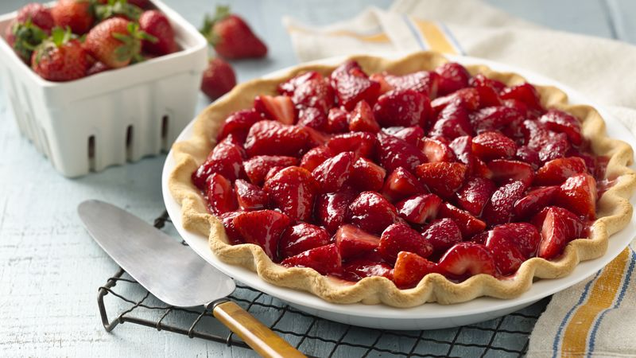

Braškių pyragas
Kiaušinius labai gerai išplakite su cukrumi iki baltumo. Tada palaipsniui suberkite persijotus miltus, sumaišytus su kepimo milteliais, ir vanilinį cukrų. Braškes nuplaukite, nuvalykite ir supjaustykite į 4 dalis. Tešlą supilkite į kepimo formą, išteptą sviestu. Ant viršaus suberkite braškes. Kepkite iki 180 C laipsnių įkaitintoje orkaitėje apie 25 minutes. Ar iškepė, patikrinkite mediniu pagaliuku. Atvėsusį pyragą pabarstykite cukraus pudra. |
 |